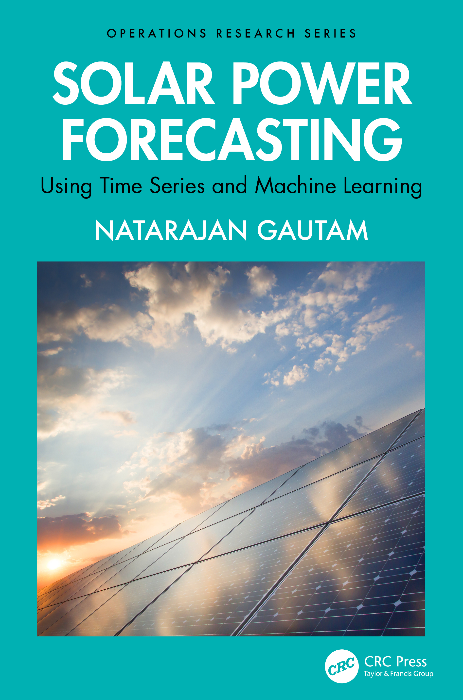

Professor, Electrical Engineering and Computer Science
Syracuse University
3-171 CST, 111 College Pl., Syracuse, NY 13244
Email: ngautam@syr.edu
Methodological domains: Stochastic modeling, control, and optimization; data science; prediction and forecasting; prescriptive analytics; queues and networks; applied probability and statistics.
Application domains: Logistics and scheduling; energy management; computer–communication and information networks; smart-manufacturing systems; service industry.
Earlier work on micro-grids, renewable sources, and storage — the GREEN project — is archived on my former Texas A&M page: GREEN site (hosted at Texas A&M).

Solar Power Forecasting: Using Time Series and Machine Learning
CRC Press (Taylor & Francis), Operations Research Series, 2026.
Hardcover (Routledge) | eBook (Taylor & Francis) | more information
Analysis of Queues: Methods and Applications
802 pages, CRC Press (Taylor & Francis), Boca Raton, FL, 2012. Click here for more information (errata, solutions manual, etc.).
Publications are listed chronologically here and organized by research area here.
A small collection of paradoxes and counter-intuitive results in analysis of queues.
For courses taught at Texas A&M, Penn State, and NPTEL (IIT-Madras), see other courses.